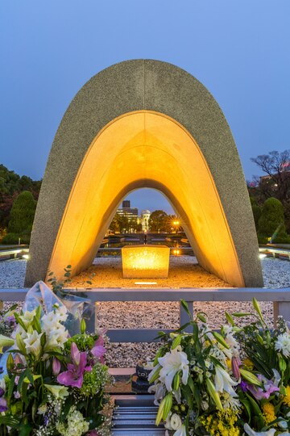

Well Come To
Welcome to our platform, their history, culture, an innovation meet! Explore the rich heritage of ancient civilizations, witness the milestones of human progress, and dive into the stories that have shaped our world. Whether you are fascinated by early societies. Oh, modern achievements, We invite you to embark on a journey of discovery and learning. Stay curious, Stay inspired, and enjoy your exploration with us. 日本の芸術と建築を発見する |

|
Here are lots of interesting destinations to visit, but don't be confused-ther're already grouped by category.
 |
 |
 |
 |
 |  |
Tokyo Tower |
Kinkaku-ji Golden Pavilion |
Fushimi Inari Taisha |
Osaka Castle |
Nara Park |
Universal Studios |

|
Historical of JapanFrom Ancient Times to Modern Power
Japan's early history dates back to the Jomon period (14,000 B.C -300 B.C). With a hunter-gather
society known for pottery the yayoi period (300 B.C-300 A.D) Introduced rice cultivation and
metalworking, while the kofun period (300 B.C - 538 A.D) Saw the rise of powerful clans Buddhism
arrived in the century. shaping Japanese culture and the governance during the Asuka and Nara
periods. the Heian period (794 - 1185 A.D) was a cultural golden age. |
|
|
|
|
|
|
|
|
| Official Name | Nibon koku(日本) or Nippon-Koku which means “state of japan” | |
| Capital | Tokyo | (administrative),colombo |
| Area | Approximately 377,975 square kilometer | (25.332 sq miles) |
| Population | Around 125 million people(as of 2023) | (2023 estimate) |
| languages | Japanese | (link language) |
| Climate |
Varied climate: Japan experiences four distinct seasons.
|
|
| Major Religions | Shintoism and Buddhism | (25,332 sq miles) |
| Independent Day | Japan does not have an independence day | (2023 estimate) |
| Government Type | Constitution monarchy with a Parliamentary Democracy. | (link language) |
| Major Industries | Automobiles, Electronic, Robotics, Tourism | (25,332sq miles) |
| UNESCO World Heritage Sites | Japan has 25 UNESCO World Heritage Sites | (2023 estimate) |
| Natural Resources | 65610sq km | (link language) |
| Cultural Festivals | Approximately 22 million | (25,332 sq miles) |
 |
Tourism And Hospitality In JapanJapan offers a captivating blend of rick cultural heritage, modern technology, stunning landscapes, and world-class hospitality. Known for its “omotenashi” culture of exception customer service, visitors are treated with great care. Whether exploring Tokyo and Osaka's bustling cities or Kyoto's tranquil temples, Japan ensures a seamless and unique experience for tourist. 
|
| Geography And Biodiversity | Cultural heritage | Foods |
Japan's geography includes four main islands and diverse natural wonders like mount full and Okinawa's beaches with its varied climates, Japan offers cherry autumns and snowy winters. National parks such as Nikko and Shiretoko feature rich ecosystem with forest, mountains, and wild life. |
Japan's rich cultural heritage includes 25 UNESCO World Heritage Sites, such as temples, shrines and castles. Kyoto, known for its traditional architecture, features landmark like Kinkaku-ji and Fushimi Inari Tasha. Ancient traditions like tea ceremonies, kimono, and sumo wrestling are still practiced, while Buddhism and Shintoism influence the country's festivals, shrines and gardens . |
Japanese cuisine or washoku, is celebrated for its balance flavors, presentation, and use of fresh, seasonal ingredients. Popular dishes include sushi ramen, and tempura with regional specialties like Osaka's Takoyaki and Hokkaido seafood. Dining options range from high-end kaiseki to casual izakaya's and ramen shop. Japanese hospitality is evident in the meticulous attention to detail in both taste and presentation, making each meal a unique experience. |
|---|---|---|